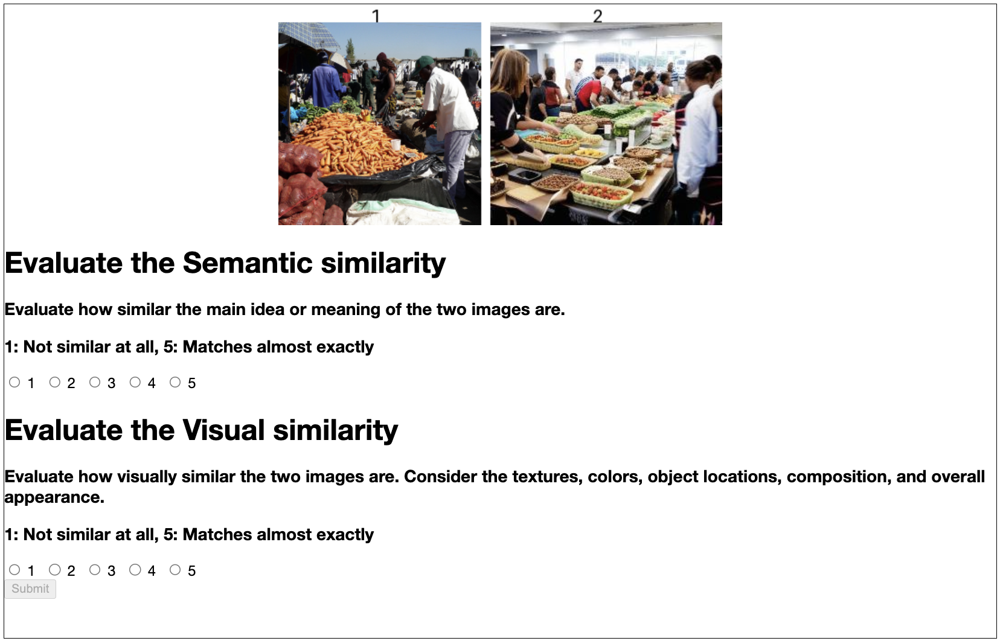
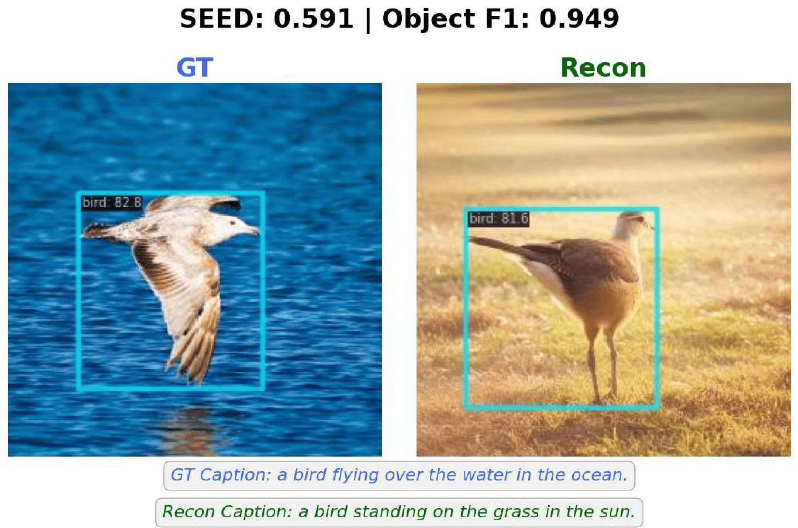

Using off-the-shelf object detectors, Object F1 compares the similarity of two images based on the presence of key objects.


We introduce new evaluation metrics for visual decoding models, geared towards evaluating the semantics of the images.
We present SEED (Semantic Evaluation for Visual Brain Decoding), a novel metric for evaluating the semantic decoding performance of visual brain decoding models. It integrates three complementary metrics, each capturing a different aspect of semantic similarity between images inspired by neuroscientific findings. Using carefully crowd-sourced human evaluation data, we demonstrate that SEED achieves the highest alignment with human evaluation, outperforming other widely used metrics.
Through the evaluation of existing visual brain decoding models with SEED, we further reveal that crucial information is often lost in translation, even in the state-of-the-art models that achieve near-perfect scores on existing metrics. This finding highlights the limitations of current evaluation practices and provides guidance for future improvements in decoding models.
Finally, to facilitate further research, we open-source the human evaluation data, encouraging the development of more advanced evaluation methods for brain decoding.
While visual decoding models are evaluated using various metrics, they boil down to either low-level pixel-wise similarity (PixCorr, SSIM) or directly comparing abstract features from vision models (AlexNet, Inception, CLIP, EffNet, etc.). These metrics often fail to capture the semantic similarity between images, which decoding models struggle with even to this day. Furthermore, the evaluation processes are abstract, making it difficult to pinpoint and diagnose specific issues of the models.
To that end, we propose new evaluation metrics that better capture semantic similarity, and provide more interpretable insights into the performance of visual decoding models.
SEED combines three complementary metrics to evaluate semantic decoding quality. Object F1 and Caption Similarity are newly proposed in this work.
SEED = (Object F1 + Caption Similarity + EffNet)
Using off-the-shelf object detectors, Object F1 compares the similarity of two images based on the presence of key objects.
Caption Similarity uses captioning models to generate text descriptions, and compares the similarity of the captions.

EffNet, a widely adopted metric, compares the similarity of two images in the feature space of an EfficientNet model.

We collected crowd-sourced human judgments on the similarity of two images, using reconstructions from MindEye2, to measure how well evaluation metrics align with human judgments. Here is how the human judgments were collected:
The table reports alignment between different metrics and the collected human judgments. SEED achieves the highest alignment across all three measures, outperforming its three component metrics.
| Metric | Pairwise Accuracy (↑) | Kendall's tau (↑) | Pearson correlation (↑) |
|---|---|---|---|
| PixCorr | 53.8% | .075 | .117 |
| SSIM | 54.5% | .090 | .112 |
| AlexNet(2) | 55.0% | .185 | .187 |
| AlexNet(5) | 49.5% | .236 | .258 |
| Inception | 63.8% | .330 | .475 |
| CLIP | 66.4% | .368 | .436 |
| EffNet | 78.0% | .559 | .748 |
| SwAV | 69.7% | .394 | .576 |
| Object F1 (Ours) | 75.8% | .516 | .708 |
| Caption Similarity (Ours) | 73.8% | .477 | .666 |
| SEED (Ours) | 81.0% | .621 | .813 |
Decoding models often capture the broad supercategory correctly, but misrepresent the specific object category.
We call this the semantic near-miss phenomenon, which was quantifiable thanks to the object detection pipeline.
For example, a model might reconstruct a different animal for a photo of a dog.

Decoding models sometimes only capture the but not the details such as background, pose, or color. This detail mismatch was quantifiable by finding cases where Object F1 and SEED scores have a large discrepancy.
@article{park2021nerfies,
author = {Park, Keunhong and Sinha, Utkarsh and Barron, Jonathan T. and Bouaziz, Sofien and Goldman, Dan B and Seitz, Steven M. and Martin-Brualla, Ricardo},
title = {Nerfies: Deformable Neural Radiance Fields},
journal = {ICCV},
year = {2021},
}